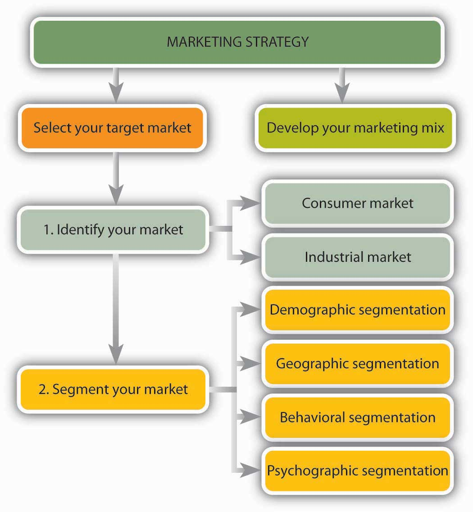

When you consider the functional areas of business—accounting, finance, management, marketing, and operations—marketing is the one you probably know the most about. After all, as a consumer and target of all sorts of advertising messages, you’ve been on the receiving end of marketing initiatives for most of your life. What you probably don’t appreciate, however, is the extent to which marketing focuses on providing value to the customer. According to the American Marketing Association, “MarketingMarketing is the activity, set of institutions, and processes for creating, communicating, delivering, and exchanging offerings that have value for customers, clients, partners, and society at large. is the activity, set of institutions, and processes for creating, communicating, delivering, and exchanging offerings that have value for customers, clients, partners, and society at large.”“The American Marketing Association Releases New Definition for Marketing,” American Marketing Association, http://www.marketingpower.com/AboutAMA/Documents/American%20Marketing%20Association%20Releases%20New%20Definition%20for %20Marketing.pdf (accessed October 12, 2011).
In other words, marketing isn’t just advertising and selling. It includes everything that organizations do to satisfy customer needs:
Not surprisingly, marketing is a team effort involving everyone in the organization. Think about a typical business—a local movie theater, for example. It’s easy to see how the person who decides what movies to show is involved in marketing: he or she selects the product to be sold. It’s even easier to see how the person who puts ads in the newspaper works in marketing: he or she is in charge of advertising—making people aware of the product and getting them to buy it. But what about the ticket seller and the person behind the counter who gets the popcorn and soda? What about the projectionist? Are they marketing the business? Absolutely: the purpose of every job in the theater is satisfying customer needs, and as we’ve seen, identifying and satisfying customer needs is what marketing is all about.
If everyone is responsible for marketing, can the average organization do without an official marketing department? Not necessarily: most organizations have marketing departments in which individuals are actively involved in some marketing-related activity—product design and development, pricing, promotion, sales, and distribution. As specialists in identifying and satisfying customer needs, members of the marketing department manage—plan, organize, direct, and control—the organization’s overall marketing efforts.
Figure 9.1 "The Marketing Concept" is designed to remind you that to achieve business success you need to do three things:
Figure 9.1 The Marketing Concept
At the same time, you need to achieve organizational goals, such as profitability and growth. This basic philosophy—satisfying customer needs while meeting organizational goals—is called the marketing conceptBasic philosophy of satisfying customer needs while meeting organizational goals., and when it’s effectively applied, it guides all of an organization’s marketing activities.
The marketing concept puts the customer first: as your most important goal, satisfying the customer must be the goal of everyone in the organization. But this doesn’t mean that you ignore the bottom line; if you want to survive and grow, you need to make some profit. What you’re looking for is the proper balance between the commitments to customer satisfaction and company survival. Consider the case of Medtronic, a manufacturer of medical devices, such as pacemakers and defibrillators. The company boasts more than 50 percent of the market in cardiac devices and is considered the industry standard setter.“Company History,” Medtronics, http://www.fundinguniverse.com/company-histories/Medtronic-Inc-Company-History.html (accessed October 13, 2011). Everyone in the organization understands that defects are intolerable in products that are designed to keep people alive. Thus, committing employees to the goal of zero defects is vital to both Medtronic’s customer base and its bottom line. “A single quality issue,” explains CEO Arthur D. Collins Jr., “can deep-six a business.”Michael Arndt, “High Tech—and Handcrafted,” BusinessWeek Online, July 5, 2004, http://www.businessweek.com/magazine/content/04_27/b3890113_mz018.htm (accessed October 13, 2011).
Declaring that you intend to develop products that satisfy customers and that everyone in your organization will focus on customers is easy. The challenge is doing it. As you can see in Figure 9.2 "Marketing Strategy", to put the marketing concept into practice, you need a marketing strategyPlan for selecting a target market and creating, pricing, promoting, and distributing products that satisfy customers.—a plan for performing two tasks:
We’ll use Figure 9.2 "Marketing Strategy" as a blueprint for our discussion of target-market selection, and we’ll analyze the concept of the marketing mix in more detail in Section 9.2 "The Marketing Mix".
Figure 9.2 Marketing Strategy
As we saw earlier, businesses earn profits by selling goods or providing services. It would be nice if everybody in the marketplace was interested in your product, but if you tried to sell it to everybody, you’d spread your resources too thin. You need to identify a specific group of consumers who should be particularly interested in your product, who would have access to it, and who have the means to buy it. This group is your target marketSpecific group of customers who should be interested in your product, have access to it, and have the means to buy it., and you’ll aim your marketing efforts at its members.
How do marketers identify target markets? First, they usually identify the overall market for their product—the individuals or organizations that need a product and are able to buy it. As Figure 9.2 "Marketing Strategy" shows, this market can include either or both of two groups:
You might focus on only one market or both. A farmer, for example, might sell blueberries to individuals on the consumer market and, on the industrial market, to bakeries that will use them to make muffins and pies.
The next step in identifying a target market is to divide the entire market into smaller portions, or market segmentsGroup of potential customers with common characteristics that influence their buying decisions.—groups of potential customers with common characteristics that influence their buying decisions. You can use a number of characteristics to narrow a market. Let’s look at some of the most useful categories in detail.
Demographic segmentationProcess of dividing the market into groups based on such variables as age and income. divides the market into groups based on such variables as age, marital status, gender, ethnic background, income, occupation, and education. Age, for example, will be of interest to marketers who develop products for children, retailers who cater to teenagers, colleges that recruit students, and assisted-living facilities that promote services among the elderly. The wedding industry, which markets goods and services to singles who will probably get married in the near future, is interested in trends in marital status. Gender and ethnic background are important to TV networks in targeting different audiences. Lifetime Television for Women targets female viewers; Spike TV targets men; Telemundo networks target Hispanic viewers. If you’re selling yachts, you’ll want to find people with lots of money; so income is an important variable. If you’re the publisher of Nurses magazine, you want to reach people in the nursing profession. When Hyundai offers recent (and upcoming) college graduates the opportunity to buy a new car with no money down, the company’s marketers have segmented the market according to education level.Hyundai Motor America, “Special Programs: College Graduate Program,” http://www.hyundaiusa.com/financing/specialoffers/collegegraduate.aspx (accessed October 13, 2011).
Geographic segmentationProcess of dividing a market according to such variables as climate, region, and population density.—dividing a market according to such variables as climate, region, and population density (urban, suburban, small-town, or rural)—is also quite common. Climate is crucial for many products: try selling snow shovels in Hawaii or above-ground pools in Alaska. Consumer tastes also vary by region. That’s why McDonald’s caters to regional preferences, offering a breakfast of Spam and rice in Hawaii, tacos in Arizona, and lobster rolls in Massachusetts.“McDonald’s Test Markets Spam,” Pacific Business News, June 11, 2002, http://www.bizjournals.com/pacific/stories/2002/06/10/daily22.html (accessed October 13, 2011). Outside the United States, menus diverge even more widely (you can get seaweed burgers or, if you prefer, seasoned seaweed fries in Japan).“The Super McDonalds,” Halfbakery, http://www.halfbakery.com/idea/The_20Super_20McDonalds (accessed October 13, 2011); “Interesting Menu Items from McDonalds in Asia,” Weird Asia News, http://www.weirdasianews.com/2010/03/23/blank-interesting-menu-items-mcdonalds-asia/ (accessed October 14, 2011).
Likewise, differences between urban and suburban life can influence product selection. As exhilarating as urban life can be, for example, it’s a hassle to parallel park on crowded city streets. Thus, Toyota engineers have developed a product especially for city dwellers (at least in Japan). The Japanese version of the Prius, Toyota’s hybrid gas-electric car, can automatically parallel park itself. Using computer software and a rear-mounted camera, the parking system measures the spot, turns the steering wheel, and swings the car into the space (making the driver—who just sits there—look like a master of urban survival skills).“Coolest Inventions 2003: Parking-Space Invader,” Time (Online Edition), http://www.time.com/time/2003/inventions/invprius.html (accessed October 13, 2011). After its success in the Japanese market, the self-parking feature was brought to the United States. So if you ever see a car doing a great job parallel parking without the driver touching the wheel, it is likely a self-parking Prius“2010 Toyota Prius Self Park In-car Demo,” YouTube video, 2:41, posted by “htmlspinnr,” March 4, 2009, http://www.youtube.com/watch?v=kxTAYqs5bTY (accessed October 13, 2011). (I wonder if you could use one of these cars in a driving test).
Dividing consumers by such variables as attitude toward the product, user status, or usage rate is called behavioral segmentationProcess of dividing consumers by behavioral variables, such as attitude toward the product, user status, or usage rate.. Companies selling technology-based products might segment the market according to different levels of receptiveness to technology. They could rely on a segmentation scale developed by Forrester Research that divides consumers into two camps: technology optimists, who embrace new technology, and technology pessimists, who are indifferent, anxious, or downright hostile when it comes to technology.Rob Rubin and William Bluestein, “Applying Technographics,” Forrester Research, http://www.kaschassociates.com/417web/417modahlmaster.htm (accessed October 13, 2011).
Some companies segment consumers according to user status, distinguishing among nonusers, potential users, first-time users, and regular users of a product. Depending on the product, they can then target specific groups, such as first-time users. Credit-card companies use this approach when they offer frequent flyer miles to potential customers in order to induce them to get their card. Once they start using it, they’ll probably be segmented according to usage. “Heavy users” who pay their bills on time will likely get increased credit lines.
Psychographic segmentationProcess of classifying consumers on the basis of individual lifestyles as reflected in people’s interests, activities, attitudes, and values. classifies consumers on the basis of individual lifestyles as they’re reflected in people’s interests, activities, attitudes, and values. If a marketer profiled you according to your lifestyle, what would the result be? Do you live an active life and love the outdoors? If so, you may be a potential buyer of athletic equipment and apparel. Maybe you’d be interested in an ecotour offered by a travel agency. If you prefer to sit on your couch and watch TV, you might show up on the radar screen of a TiVo provider. If you’re compulsive or a risk taker, you might catch the attention of a gambling casino. If you’re thrifty and uncomfortable with debt, Citibank might want to issue you a debit card.
Typically, marketers determine target markets by combining, or “clustering,” segmenting criteria. What characteristics does Starbucks look for in marketing its products? Three demographic variables come to mind: age, geography, and income. Buyers are likely to be males and females ranging in age from about twenty-five to forty (although college students, aged eighteen to twenty-four, are moving up in importance). Geography is a factor as customers tend to live or work in cities or upscale suburban areas. Those with relatively high incomes are willing to pay a premium for Starbucks specialty coffee and so income—a socioeconomic factor—is also important.
The market can be divided according to any of the following variables:
If you were developing a marketing campaign for the Harley-Davidson Motorcycle Company, what group of consumers would you target? What if you were marketing an iPod? What about time-shares (vacation-ownership opportunities) in Vail, Colorado? For each of these products, identify at least five segmentation characteristics that you’d use in developing a profile of your customers. Explain the segmentation category into which each characteristic falls—demographic, geographic, behavioral, or psychographic. Where it’s appropriate, be sure to include at least one characteristic from each category.